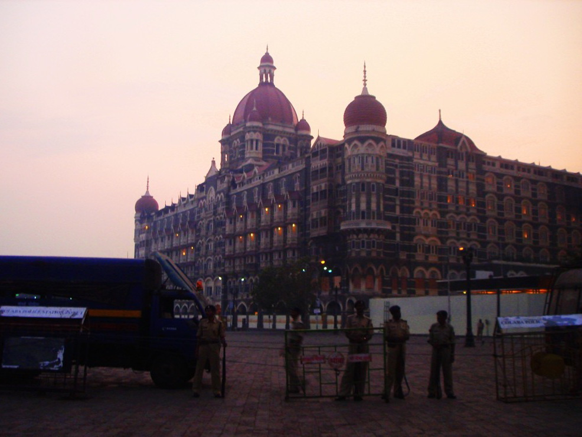
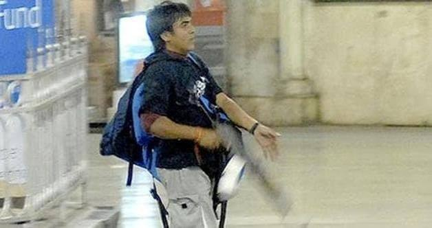
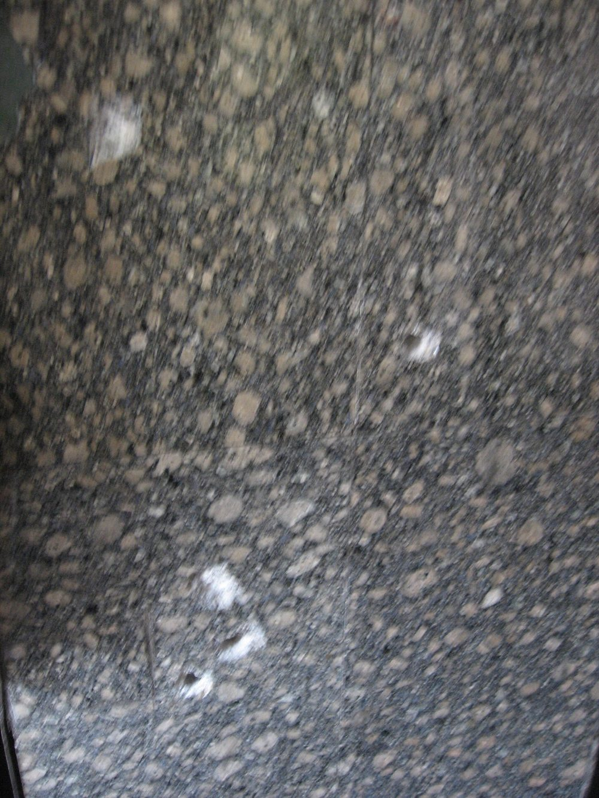
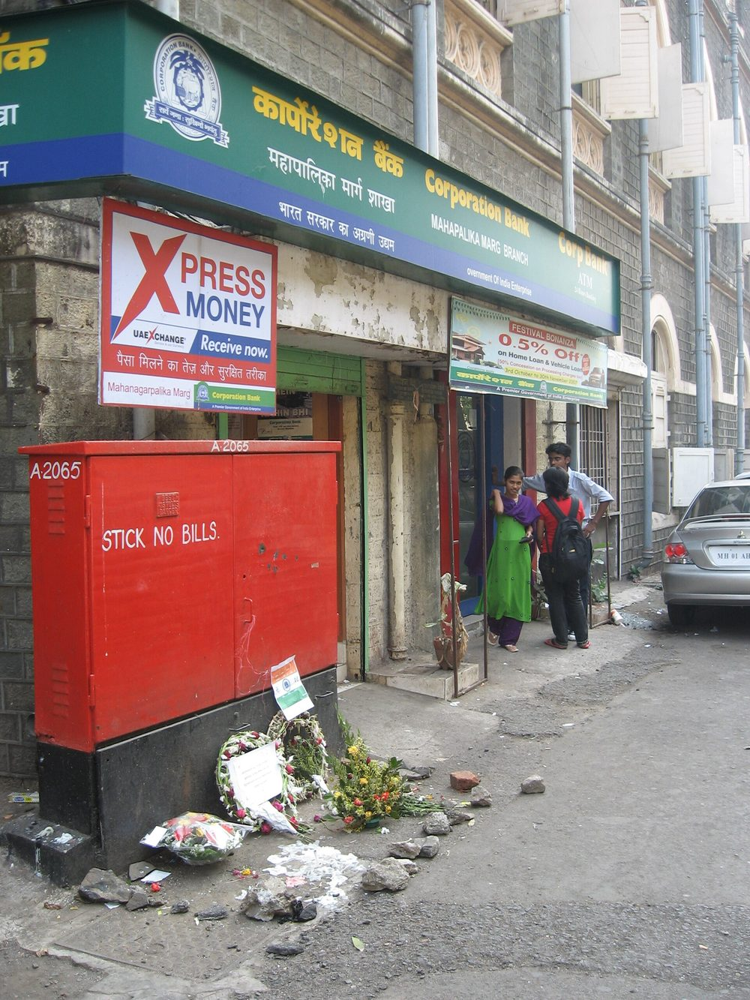
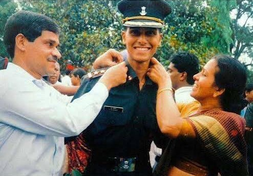
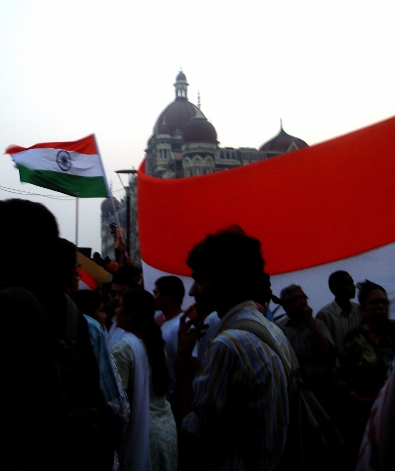
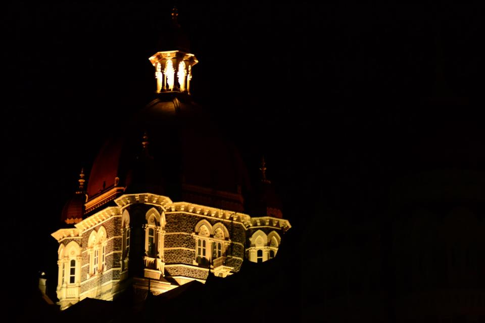

Mumbai · 26 – 29 November 2008
They stood between the city and the guns.
In memory of the 166 people killed in the Mumbai attacks, and of the police officers, Home Guard and commandos who fell defending them.
The Taj Mahal Palace, a week after the attacks. Photo: Stuti Sakhalkar, CC BY 2.0, via Wikimedia Commons

The Attack
On the evening of 26 November 2008, ten armed men came ashore at Colaba in inflatable dinghies. They had sailed from Karachi and, on the way, hijacked an Indian fishing trawler and killed its navigator.
Within an hour they had struck across South Mumbai: the Chhatrapati Shivaji Terminus railway station, Leopold Cafe, the Taj Mahal Palace and Oberoi–Trident hotels, Nariman House and Cama Hospital. Bombs left in two taxis exploded at Wadi Bunder and Vile Parle.

Police officers carrying service revolvers and old rifles went up against automatic weapons and grenades. Hotel staff led guests through kitchens and service corridors. Nurses at Cama Hospital locked the wards and hid their patients.
One gunman, Ajmal Kasab, was captured alive at Girgaum Chowpatty because an unarmed Assistant Sub-Inspector, Tukaram Omble, held on to the barrel of his rifle. Commandos of the National Security Guard cleared the last building, the Taj, on the morning of 29 November.

Timeline
Places
Select a location to see who fell there in the Roll of Honour.
Figures per location are the most commonly cited; official and press counts differ slightly.

Roll of Honour
Fourteen police officers, a Home Guard and two commandos of the National Security Guard gave their lives. Police ranks and units are as recorded by the Maharashtra Police; the place each person fell is as recorded by the Bombay High Court.
Showing those who fell at
Ashoka Chakra Kirti Chakra Awarded posthumously, 26 January 2009.

Ashoka Chakra · Taj Mahal Palace
Major Sandeep Unnikrishnan
51 Special Action Group, National Security Guard · 1977–2008
“Do not come up, I will handle them.”
He led his commandos into the Taj on 27 November and is credited with helping to bring fourteen hostages to safety before he was killed in the early hours of the 28th. He was thirty-one.
Beyond the Uniform
Staff, nurses and ordinary people who chose to protect others.


The dome was restored. The city did not forget.
Jai Hind
The restored dome of the Taj. Photo: Punit Rastogi, CC BY-SA 3.0, via Wikimedia Commons

Sources & Credits
Sources
- Maharashtra Police, List of Martyrs of Maharashtra Police, 1964–2021. Names, ranks and units.
- Bombay High Court, State of Maharashtra v. Mohammed Ajmal Amir Kasab, Confirmation Case No. 2 of 2010, Table 2. Where each person fell.
- Press Information Bureau, Ashoka Chakra awardees and their saga of gallantry. Citations for the Ashoka Chakra.
- The Indian Express, “Top gallantry awards for 26/11 heroes”, 26 January 2009. Kirti Chakra awards.
- Wikipedia, “2008 Mumbai attacks”. Timeline and figures per location.
Photographs
- Cover: Stuti Sakhalkar, Taj Mahal Hotel after 2008 Mumbai Attacks, CC BY 2.0.
- CST station: Sebastian D'Souza / Mumbai Mirror. All rights reserved by the copyright holder.
- Leopold Cafe and Rang Bhavan Lane: Nicholas (Nichalp), CC BY-SA 3.0.
- Peace march: Stuti Sakhalkar, CC BY 2.0.
- Restored dome: Punit Rastogi, CC BY-SA 3.0.
- Major Unnikrishnan with his parents: family photograph, as published by The Better India.
- Portraits in the Roll of Honour: reproduced from publicly circulated tribute material. The original photographers could not be identified; copyright remains with them and with the families.
- Map: © OpenStreetMap contributors.
Commons photographs are cropped and toned for this page. If you hold the rights to an image here and would like it credited differently or removed, please open an issue.